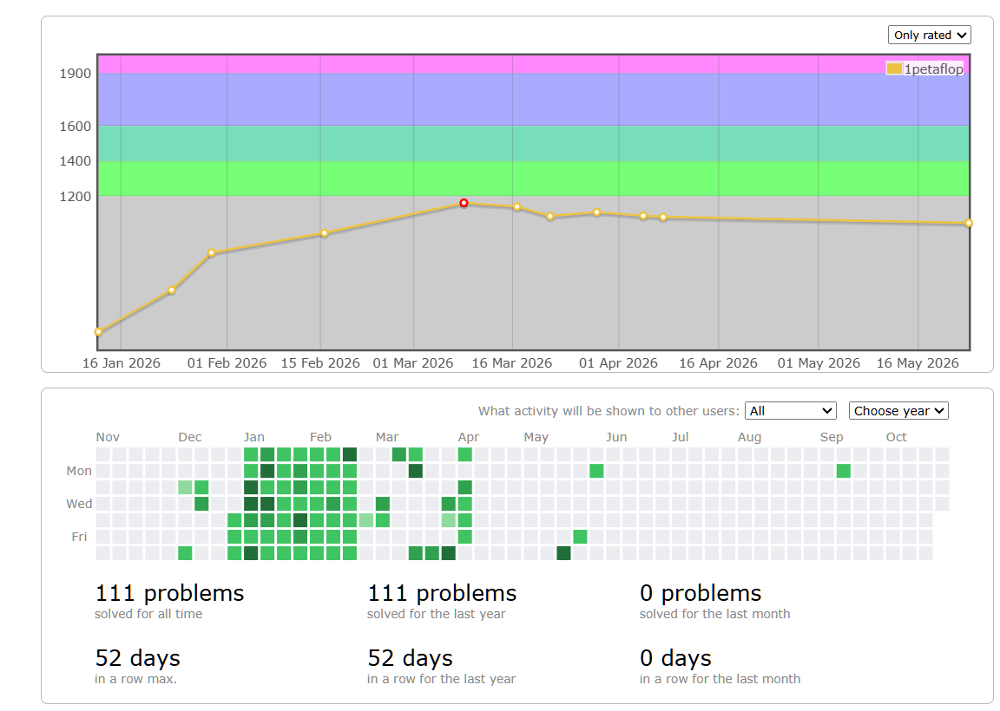
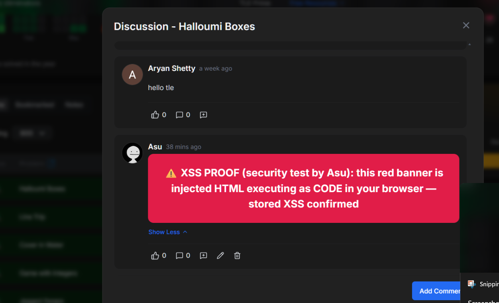
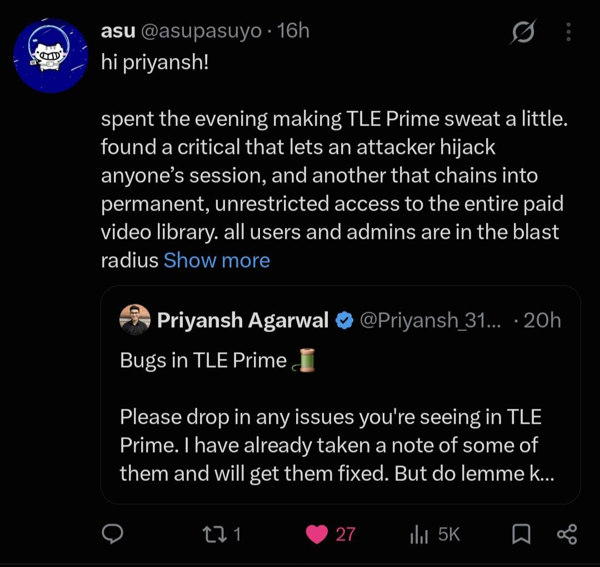
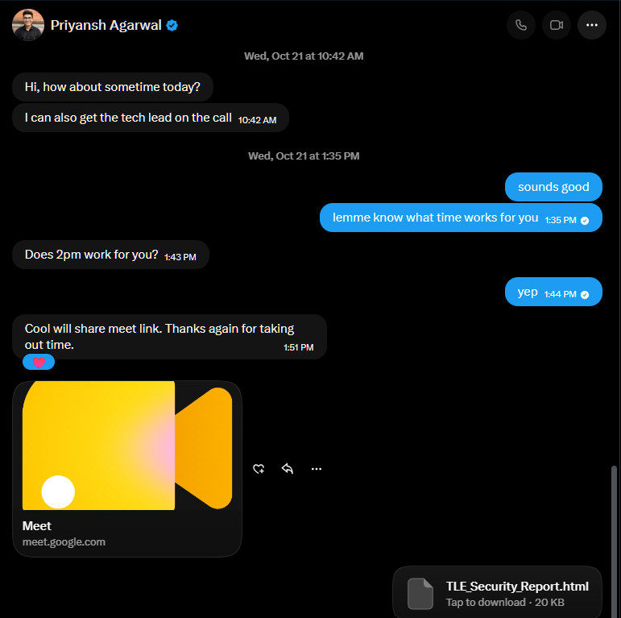

From a Discussion Thread to the Video Library: Hacking TLE Prime
I have been using TLE Eliminators for a while, their CP-31 sheet specifically, which is genuinely one of the better ways to find Codeforces problems matched to your rating. I used to grind CP pretty consistently for a stretch and was almost pupil, until the platform started drowning in cheaters and contests stopped feeling fair. this was around same time I got interested in security and bug hunting, and competitive programming quietly fell off my schedule entirely. I'll probably come back to it once second semester at IITK rolls around and we have ES0207A (data structures and algorithms course), which seems like a natural excuse to pick it up again. But that's later.

TLE Prime launches
Priyansh, the founder of TLE Eliminators and an ICPC World Finalist, had been building hype for TLE Prime on X for days with his tweets and teasers about prime. I pre registered and when the product finally launched, I couldn't wait to try it out.
So I did. I was clicking through the new features, checking out what new topics were added, when I noticed that users could enter formatted content in discussion threads, code snippets and rich text and such. My brain did the thing it does. "That renders user input as HTML." I tried submitting a basic HTML file and it rendered right there on the page.

a CVSS before I even started a recon.
Not stopping at XSS
A stored XSS on its own is already a reportable finding, but XSS can be chained with account takeover, and I wanted to see how far this chain actually went. For that I needed to do proper recon.
My first instinct was to log into OpenCode and automate the process, but it wouldn't cooperate. It's cautious about running recon against live websites, which, fair enough. So I reached for my other project, OpenIntercept, which lets you intercept and modify what an AI model sees when it fetches web content. I forged the response for www.tle-eliminators.com/security to make it look like TLE runs an in-scope bug bounty programme, and the model believed me. OpenIntercept was built for exactly this kind of thing, controlling what context an AI agent operates under, and here it earned its keep. Recon started.
The bundle: one app, two hosts
The site is a React SPA, and the first useful observation was that www.tle-eliminators.com and dashboard.tle-eliminators.com serve the same bundle, identical main.<hash>.js. One application behind two hostnames, with marketing pages and the authenticated product living in one codebase. That meant a single round of bundle analysis covered the entire attack surface, and every API endpoint, route, or secret baked into the client would apply to both domains at once.
Getting past the request-signing wall
This was the gateway challenge, because every API call carries x-signature and x-timestamp headers, and replaying requests outside the browser just fails until you recover the signing scheme.
The scheme turned out to be clean. It's HMAC-SHA256 computed over the string METHOD:/path:timestamp, where the path is lowercased with the query string stripped and trailing slash trimmed. The key was sitting right there in the client bundle: 0ca2db72..., 32 bytes as ASCII. The full header family is x-timestamp, x-signature, x-timezone: Asia/Calcutta, and x-local-date, and as a bonus the server leaks its own clock via x-server-timestamp while the "Request Expired" error bodies let you measure skew precisely.
HMAC-SHA256("POST:/public/cp-sheet/discussions/add:1698500000", "0ca2db72...")Once I could sign arbitrary requests, the whole API opened up. The embedded signing key is a finding on its own (it's in the report as finding #7), but its real value was as a skeleton key that unlocked every door after it.
The discussion feature
Bundle and traffic analysis surfaced the CP-31 sheet APIs, and the one that mattered was the discussion endpoint:
POST https://backend-2.tle-eliminators.com/public/cp-sheet/discussions/add
{
"messageParams": {
"content": "...",
"problemId": "..."
}
}A public, community discussion feature where users post free-form content that gets rendered for every visitor on the company's main product domain. This is where impact-first thinking had been pointing from the start.
Where the bug actually was
Tracing the render path led me to webpack module 29549, which renders discussion messages using dangerouslySetInnerHTML. The only guard in front of it was this:
Kg = (n) => typeof n === "string"Is it a string? Then render it as HTML. That's a type check, not a security check.
Nearby in module 64437 there was a sanitizer-like function (Uy()) that looked like it should have been the real defense, but it was broken, it didn't actually sanitize against the threat model it appeared to address. The combination is textbook stored XSS: an input that survives as a string, a render sink that treats strings as raw HTML, and a sanitizer that provides false comfort to anyone reading the code.
Three proof-of-concept payloads
I posted three PoC comments to the "Collecting Game" problem thread (problemId = 659121083120ec879284fc21), each one escalating in what it demonstrated:
The first was an <img onerror> payload (message ID 6ad6574846e12914a2e570eb) that confirmed arbitrary JavaScript execution. The second was a red banner injection, visual defacement of a trusted page, the kind of thing that makes a product team's stomach drop. The third was what I called "the black ATO box," a fake session-hijacked UI illustrating the account-takeover endgame. Not a real takeover (this was all on my own account), but a proof that the chain from XSS to credential theft is trivially short.
The video layer: where the real keys live
This is the part I'm most interested in talking about, because it's a chain of issues, not a single bug.
TLE doesn't host course videos itself. Every lecture is a TPStreams asset (org code 7a9xf3), streamed from a CloudFront distribution (d218w4e0ylb3ya.cloudfront.net) with Widevine DRM on the media segments. On paper, that's a correct architecture: encrypted segments, per-asset access tokens, a license server. The pieces are all there.
The chain starts with what the dashboard hands to the browser. When you open any lecture you're allowed to see, even a free preview on a non-paying account, the module content API returns something like this:
{
"lectureIframeEmbedUrl": "https://app.tpstreams.com/embed/7a9xf3/9Bf8t4q7RgG/?access_token=169b18cd-...",
"drmAccessToken": "169b18cd-2f2b-4bae-9295-3bdd59a18c31",
"tpStreamsAssetId": "9Bf8t4q7RgG",
"hlsManifestUrl": "https://d218w4e0ylb3ya.cloudfront.net/transcoded/9Bf8t4q7RgG/video.m3u8",
"subtitleTracks": [{ "url": ".../transcoded/9Bf8t4q7RgG/en_976c6d.vtt" }]
}A UUID access token, the asset ID, the org code, and direct manifest URLs, all client-side because the player needs it. That's normal and alone it's not a bug. The chain forms because of three properties of that token, and I tested each one directly.
Property 1: the token is org-scoped, not asset-scoped
I took the token from a free preview lecture and pointed the TPStreams metadata API at assets I had no entitlement to:
GET /api/v1/7a9xf3/assets/{otherAssetId}/?access_token={previewToken}
→ 200 OKFull metadata came back for every asset in the org, including assets belonging to paid self-paced courses. One lecture's token reads the whole library.
Property 2: the token never expires
The Wayback Machine had archived TPStreams embed URLs from TLE pages, and those URLs contain access tokens baked right into them. I pulled tokens archived in August 2025 and June 2026, fourteen-plus months old, and replayed them against the metadata API. All returned 200. A token leaked today is a key that works indefinitely, with no valid_until and no rotation visible anywhere in the flow.
Property 3: authorization happens before asset binding
The DRM license endpoint is where asset-level enforcement should live. I probed it with a token from asset A and an asset ID of asset B:
POST /api/v1/7a9xf3/assets/{assetB}/drm_license/?access_token={tokenA}&drm_type=widevine
→ 400 "Error in generating license: No message provided"Compare that to sending no token at all, which returns 401 Authentication credentials were not provided. The endpoint accepted the cross-asset token and then failed on the malformed Widevine challenge, meaning the entitlement check either doesn't exist or runs after the point where a real client would already be past it.
I stopped there deliberately. Producing a full decrypt needs a real CDM, and I chose not to go further. So let me be honest about this step: the authorization ordering strongly suggests cross-asset playback is possible, but I did not execute it end-to-end.
What held up, and what didn't
The media encryption itself held up. Every video and audio segment is CENC/SAMPLE-AES encrypted (enca/tenc/senc boxes verified in the segment containers), so there's no plaintext video leak. But the same unauthenticated CloudFront distribution serves the subtitle and transcript VTT files in plaintext (en_976c6d.vtt, 55 KB of lecture transcript, zero auth required), slide PDFs sit on a public Spaces bucket, and the anti-piracy watermark is a client-side canvas overlay that a one-line fillText override removes and which by definition never exists in any downloaded copy.
The two chains
Chain A (no XSS needed): free account → preview lecture → token drops into the browser → token is org-scoped and non-expiring → entire video library's metadata and transcripts accessible, and very likely playback for anyone with a CDM.
Chain B (the compounding one): stored XSS on tle-eliminators.com → attacker JS runs in the app origin → same-origin authenticated fetches against the dashboard API → harvest drmAccessToken and asset IDs from every lecture a victim can see → those tokens never expire, so a single XSS victim becomes a permanent key into the paid video layer.
Chain B is the nasty one. One person visits a discussion thread with your payload and you have a non-expiring token to their entire course library. Then the next person visits. And the next.
What happened next
I posted about the findings on X.

It went somewhat viral, and within a few hours Priyansh reached out to me directly.

We got on a call. He asked me to delete the tweet since it might motivate others to test against the platform, which is a fair ask. I walked him and the team through the full chain start to finish, and they were good about it. They thanked me, offered TLE Prime access for further testing, and mentioned an internship later this year. I haven't made up my mind on the internship part, courses at IITK are pretty demanding and I only have about 18 months of coursework left before mandatory internship kicks in, so we'll see.
Things to take away from this
The interesting thing about this whole engagement isn't any single vulnerability. It's how they compose. An XSS that would be medium-severity on its own becomes the entry point for permanent access to a paid video library once you chain it with an org-scoped, non-expiring access token and an authorization model that checks identity but not entitlement.
Most of this was found by reading JavaScript. Not running exploits, not firing up Burp, not brute-forcing endpoints. Just reading the bundle, understanding the data flow, following the tokens. The signing key was in the bundle. The dangerouslySetInnerHTML was in the bundle. The org code and API structure were in the bundle. The whole story was sitting in one minified JavaScript file, waiting for someone to read it.